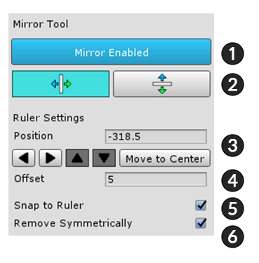
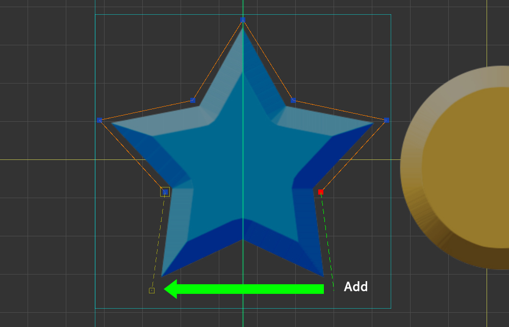
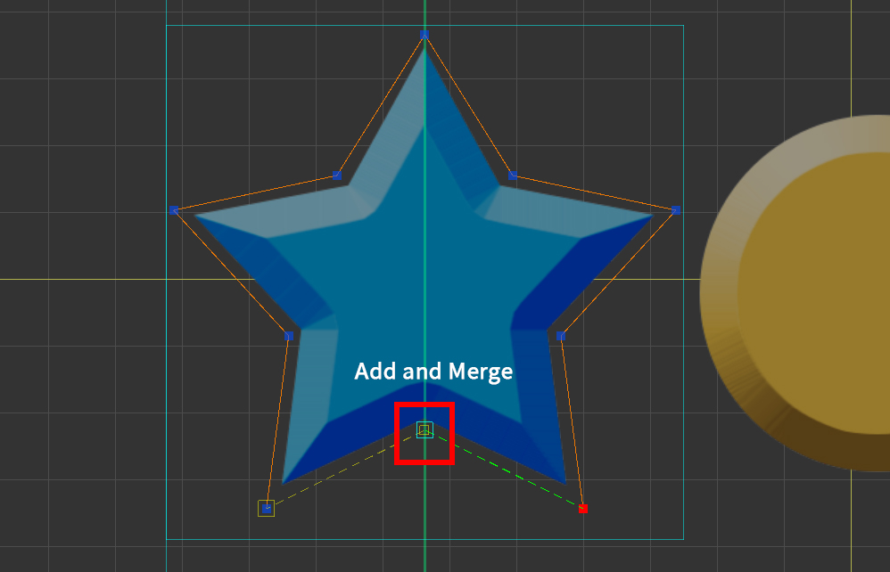
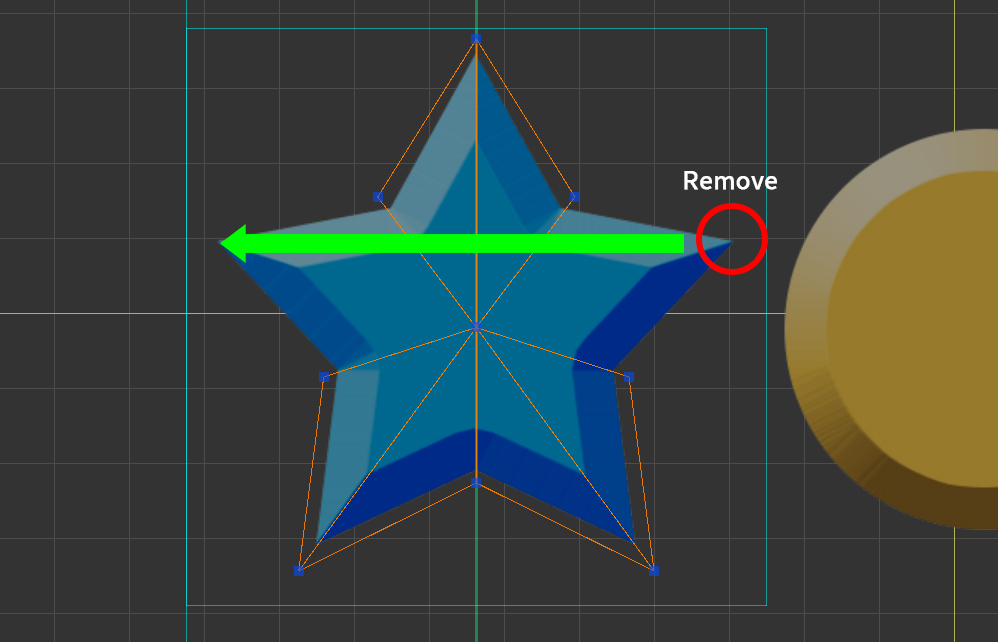

AnyPortrait > 메뉴얼 > 메시 미러 툴
메시 미러 툴
1.1.0
메시 미러 툴은 메시를 만들 때, 좌우 대칭인 이미지를 대상으로 빠르게 작업할 수 있도록 도와주는 기능입니다.
이 기능을 이용하면 대칭된 위치에 버텍스를 같이 생성하거나 위치를 수정할 수 있습니다.
이미지 영역 설정하고 미러 축 위치시키기

(1) 메시를 선택합니다.
(2) Setting 탭을 선택합니다.
(3) Area Disabled 버튼을 눌러서 Area Enabled 상태로 변경합니다.
(4) 영역의 크기를 설정합니다. 증가/감소 버튼을 누르거나 직접 값을 입력하여 설정할 수 있습니다.
(5) 사각형의 영역이 작업 공간에 나타납니다.

(1) Make Mesh 탭을 선택합니다.
(2) Add 탭을 선택합니다.
(3) Mirror를 활성화합니다.
(4) 미러 축의 위치를 설정합니다.
위치 값을 입력하거나 증감 버튼을 눌러서 위치를 직접 설정할 수 있습니다.
앞의 과정에 따라 영역이 만들어져 있다면 Move to Center 버튼을 눌러서 바로 중심으로 이동시킬 수 있습니다.
미러 툴은 작업 보조 기능이기 때문에, 메시 편집이 종료되면 미러 기능은 비활성화됩니다.
미러 축의 위치나 설정 값은 유지됩니다.
미러 툴 UI

1. 미러 툴을 켜거나 끕니다.
2. 미러 축의 방향을 수직 또는 수평으로 설정합니다.
3. 미러 축의 위치를 설정합니다.
이미지 영역(Area)이 설정되어 있다면 Move To Center 버튼을 눌러서 중심으로 바로 이동시킬 수 있습니다.
4. 미러 축 상에 버텍스를 위치시킬 때, Offset 만큼의 거리 내에서의 버텍스는 축에 있는 것으로 간주합니다.
5. 미러 축 상에 버텍스를 스냅하여 위치시킵니다.
6. 버텍스를 삭제할 때, 맞은편의 버텍스도 같이 삭제합니다.
미러 툴을 이용하여 메시 만들기

버텍스를 추가할 때, 대칭됭 위치에서 동일하게 버텍스가 추가됩니다.

미러 축 상에 버텍스를 추가하면, 미러 축에 합쳐진 1개의 버텍스가 생성됩니다.

Shift 를 누르고 축에서 교차하여 선을 만들면, 교차 되는 위치에 버텍스가 생성됩니다.

버텍스를 이동시키면 맞은편 버텍스도 같이 이동합니다.

Remove Symmetrically 옵션이 켜져 있다면, 버텍스를 삭제할 때 맞은편도 같이 삭제됩니다.
여러 개의 버텍스를 한번에 미러 복사하기

(1) Make Mesh 탭을 선택합니다.
(2) Edit 탭을 선택합니다.
(3) 미러 툴을 켭니다.
(4) 복사하고자 하는 버텍스들을 선택합니다. 복사될 버텍스들을 미리 볼 수 있습니다. (초록색 버텍스와 점선)
(5) Copy Symmetrically 버튼을 눌러서 복사합니다.